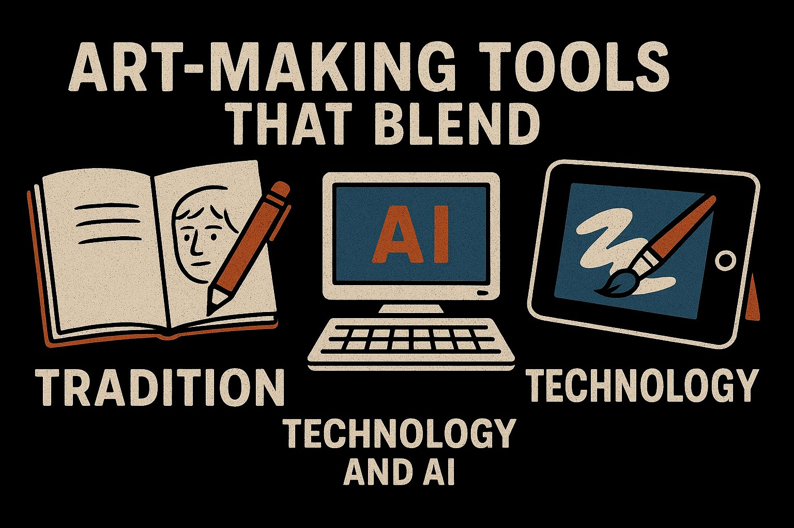
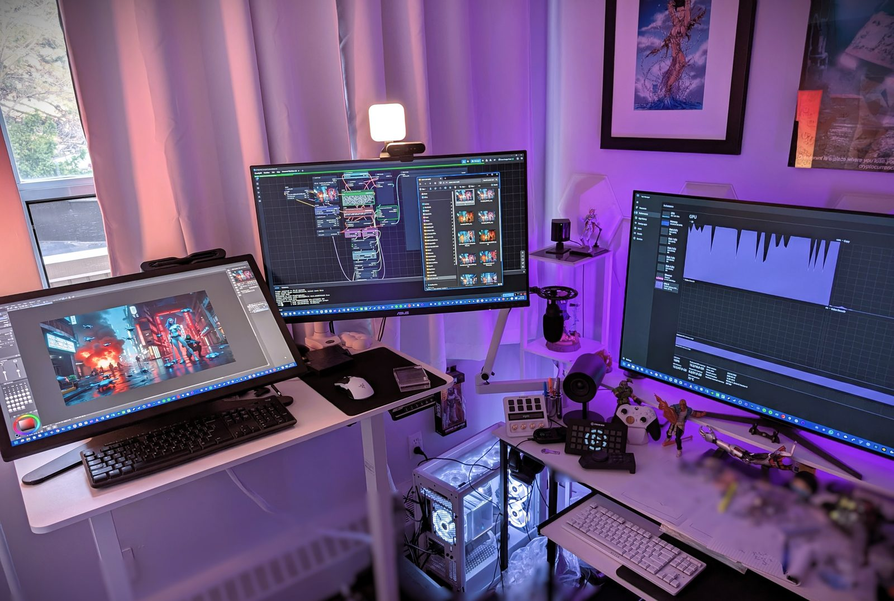

My Favorite Tools — Blending Tradition, Technology, and AI in Art
The Harmonization of Past and Future Art-making Tools.

In the ever-evolving world of art, I’ve found a unique balance between the timeless charm of traditional methods and the boundless potential of digital tools and AI. While my creative journey began with pencil and paper, today it’s a fusion of tactile experiences and cutting-edge technology. This article dives into my favorite tools—both old and new—and how I weave AI into my workflow to bring my artistic visions to life.
Traditional Tools: A Rare Treat and a Meditative Escape
Though I’ve shifted much of my work to the digital realm, I still cherish the simplicity of drawing with a pencil on paper. It’s a rare treat these days, reserved for special projects and cover art, especially when I’m channeling the traditional comic art style I love. There’s an unmatched intimacy in the scratch of graphite on paper—it’s where my ideas flow freely, unhindered by technology.
On the flip side, painting abstract work on canvas remains a cornerstone of my creative process. I relish the physical manipulation of paint, the way a brush glides across the surface, and the texture that builds with each stroke. For me, it’s a pure, meditative experience—a chance to step away from screens and immerse myself fully in the act of creation. These traditional tools keep me grounded, reminding me of art’s raw, tactile roots.
Digital Tools: Power and Precision
While traditional methods hold a special place in my heart, my digital toolkit is where efficiency and innovation shine. Here’s a look at the gear that powers my modern workflow:
Custom PC: The Heart of My Digital Studio
At the core of my setup is a powerful custom-built PC, designed to run local AI generation tools. Its high processing power lets me experiment with various AI models without relying on cloud services, giving me control, privacy, and speed. Whether I’m generating base images or refining complex artwork, this machine is the backbone of my digital creative process.
Large 4K Monitors: ASUS ProArt and LG Ultragear
Visual fidelity is crucial, and my dual-monitor setup delivers just that. The ASUS ProArt Display 32” 4K HDR Monitor offers exceptional color accuracy and resolution, making it perfect for detailed illustrations and ensuring my colors stay true from screen to print. Paired with it is the LG 48GQ900-B 48” Ultragear UHD OLED Gaming Monitor, which boasts a massive workspace and anti-glare coating—ideal for long hours of editing and painting. Together, these screens provide the clarity and real estate I need to bring my art to life.
Wacom Cintiq Pro 27: My Digital Canvas
Hands down, one of my favorite tools is the Wacom Cintiq Pro 27 Creative Pen Display. This 4K graphic drawing monitor, with 8192 levels of pen pressure and 99% Adobe RGB coverage, feels like an extension of my hand. Its large, responsive drawing area and ergonomic design make it incredibly good for sketching, painting digitally, and refining illustrations. It bridges the gap between traditional drawing and digital precision, offering a natural feel with all the perks of modern technology—undo, layers, and endless customization.

AI Integration: A Creative Amplifier
AI has transformed how I approach art, acting as a powerful collaborator in my workflow. I rely on a mix of open-source and closed-source models, each serving a distinct purpose.
Open-Source Models: These are my go-to for their flexibility and community support. I can tweak them to fit my needs, whether I’m generating initial concepts or experimenting with new styles. They’re perfect for an artist who values customization and hands-on control.
Closed-Source Models: Occasionally, I turn to these for their special capabilities—think advanced style transfers or professional-grade outputs that add a unique flair to my work.
I integrate AI in various ways depending on the project. Sometimes, it’s about generating a rough base image that I refine by hand. Other times, I use it for style transfer, blending the essence of one artwork into another to create something fresh. It’s also a time-saver for tasks like upscaling images without losing quality. AI doesn’t replace my creativity—it amplifies it, offering new perspectives and possibilities while keeping me firmly in the driver’s seat.
Conclusion: A Harmony of Past and Present
My favorite tools reflect a blend of tradition and technology, each playing a vital role in my artistic journey. Drawing on paper and painting on canvas connect me to the physical joy of creation, while my custom PC, 4K monitors, and Wacom Cintiq Pro 27 empower me to explore the digital frontier. AI ties it all together, enhancing my workflow and pushing the boundaries of what’s possible.
As an artist, I see these tools as partners in my creative process. Whether I’m sketching a comic cover, meditating over an abstract canvas, or collaborating with AI on a digital masterpiece, they equip me to express my vision in ways that feel both timeless and forward-thinking. Here’s to the tools that make it all happen—and to the art yet to come!